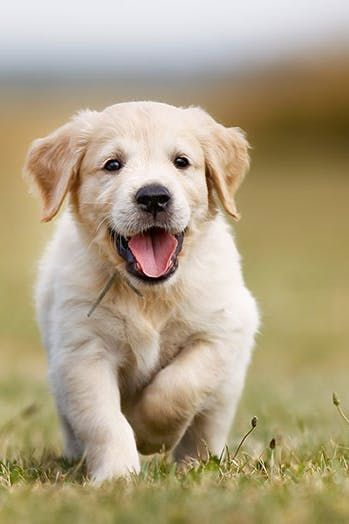

SIA 'Kopā ar mums'
Musu misija
Suņi 🐕
100
Kaķi 🐈
300
Musu mērķi
- Nodrošināt jebkuram dzīvniekam, kuram jebkādu iemeslu dēļ ilgstoši nevar atrast jaunu saimnieku, uzturēšanu to mūža garumā, izveidojot un uzturot dzīvnieku pansionātu;
- veicināt labvēlīgu attieksmi pret dzīvniekiem, neatkarīgi no to sugas, vecuma un veselības stāvokļa;
- mēs sniedzam atbalsu un norādījujumus visā adoptaciijas procesā
- Brīvprātīgā darba atvērto durvju dienu semināru turpināšana, brīvprātīgo palīgu suņu staidzināšanā semināru turpināšana, jaunu brīvprātīgā darba veicināšanas iespēju meklēšana, piesaistot dažādas sabiedrības mērķa grupas.
Atrašanas vieta
Mēs atrodamies Rīgā, Siguldā, Cēsu un bauskas novadā.Dzīvnieku patversme SIA "Kopā ar mums" apmeklētājiem atvērta katru dienu (bez brīvdienām):
- 10:00-18:00
Adoptē mīluli
Mums mīluli ir daudz:
|  | |
 |
informacija
Kontakti:
tel: +371 2525252 e-pasts: kopaarmums@inbox.lv
Adrese:
Meža iela 1, Jelgavas pagasts,Jelgavas novads, LV-1111
DARBA LAIKS: Pirmdiena-Svetdiena no 10:00 līdz 22:00